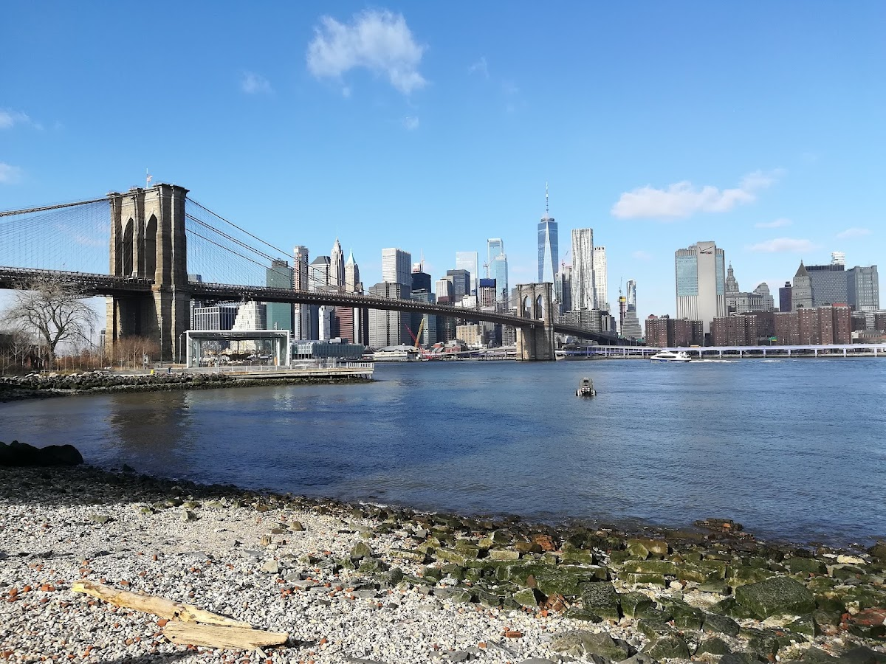
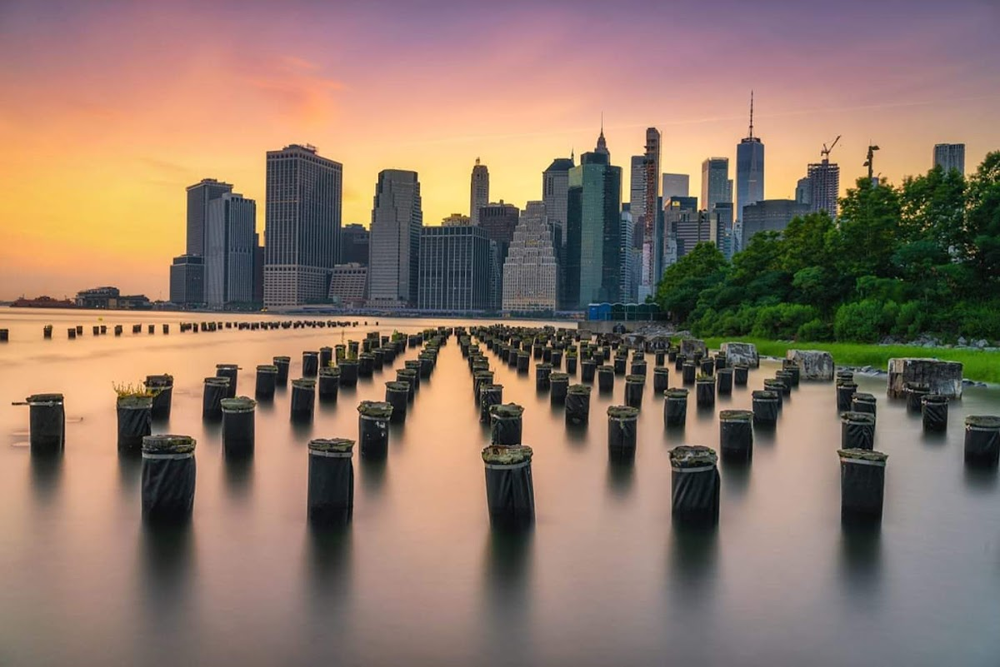
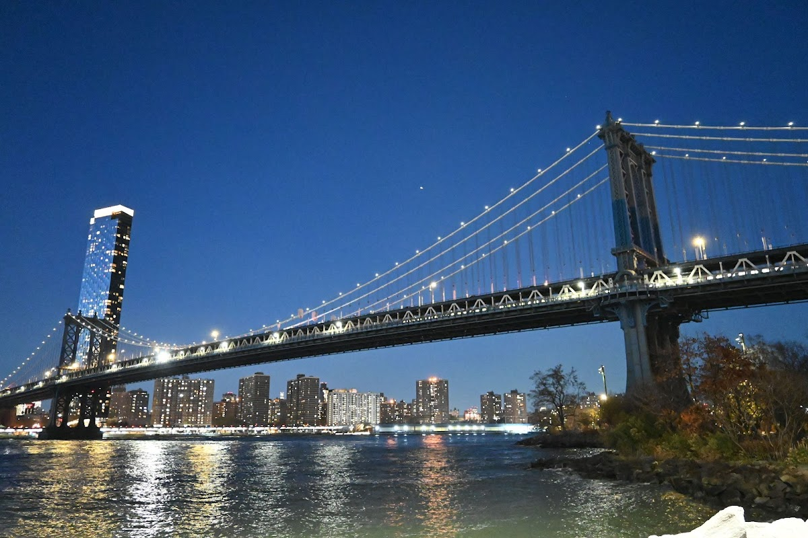
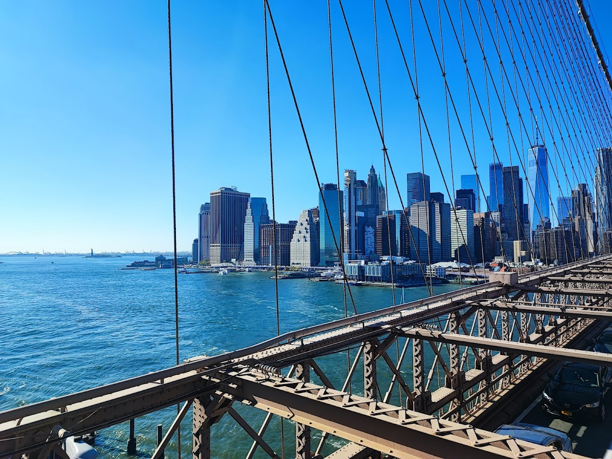
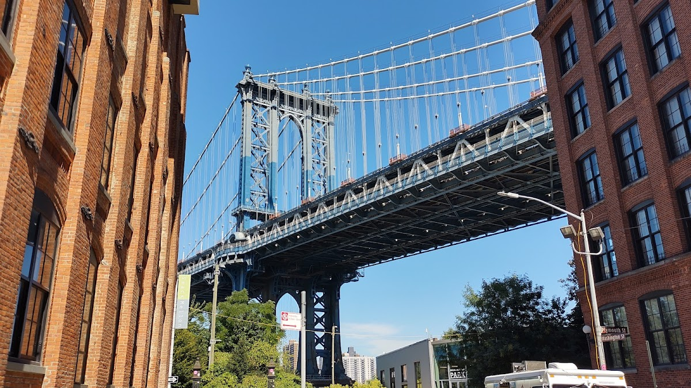

Public / private
Brooklyn Bridge Parks
Top public private parnership and the only park in nyc you can live in? Thanks bloomberg.
Background
The development of Brooklyn Bridge Park began in the early 2000s, transforming former industrial piers into a vibrant public space. The park officially opened in 2010 and has since become a popular destination for both locals and tourists, offering green spaces, sports facilities, and cultural events.
Original AI-assisted background; not independently verified.
From the original map
The only park you can live in. More of this please.
Check current access before visiting. A place on this map is not necessarily open to the public.
Nearby places
Straight-line distances, not walking routes.
Discussion & corrections





40.70190, -73.99610 · Explore the surrounding area ↗